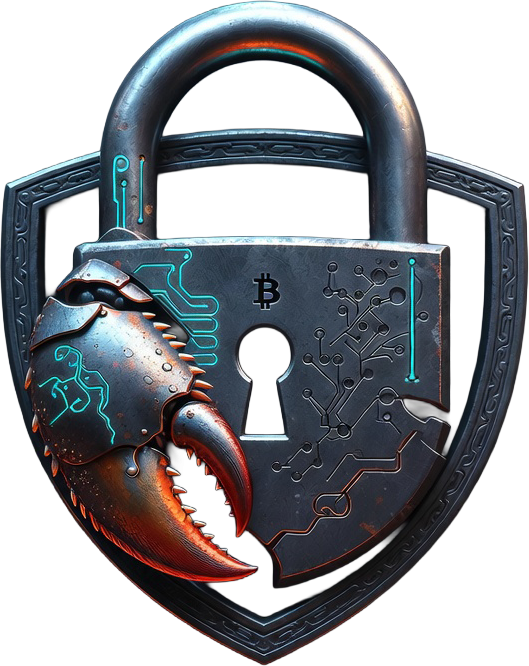

Cryptographic Integrity
SHA-256 chain hashing, Ed25519 signatures, and Merkle roots prove event and session integrity.
OpenClaw Plugin + SDK + API + Dashboard + CLI
EctoClaw captures full agent lifecycles, enforces policy decisions, emits compliance evidence, and ships developer tooling for integration, verification, and operations at production scale.

SHA-256 chain hashing, Ed25519 signatures, and Merkle roots prove event and session integrity.
Allow/deny controls, content filters, max-steps guardrails, and approval triggers for sensitive actions.
REST API, SSE stream, dashboard views, metrics, and compliance bundles for active governance.
Typed SDK, OpenClaw plugin package, CLI commands, demo scripts, and CI-ready build/test pipeline.
Generate defensible records for regulated runs without changing agent business logic.
Trace exactly which skill, tool, or model response caused an unexpected action.
Gate sensitive actions by policy and log explicit approval decisions as first-class events.
Produce report bundles with verification material your security and legal teams can review.
EctoClaw
├─ OpenClaw Plugin Hooks and Event Mapper
├─ REST API + SSE Stream + Dashboard
├─ Policy Engine and Approval Gates
├─ Cryptography Core
│ ├─ SHA-256 Hash Chain
│ ├─ Ed25519 Signatures
│ └─ Merkle Tree Proofs
└─ SQLite Ledger Backendnpm install
npm run build
npm test
# start local server
npm run dev -- serve --devNeed full setup guidance and demos? Open the How-to page.
No. It adds cryptographic auditability to OpenClaw by recording agent activity as immutable events.
Yes. You can integrate via REST/SDK, use the plugin hooks, or run the server and dashboard directly.
No. It is an end-to-end audit platform with policy controls, compliance exports, APIs, SDK, and CLI tools.